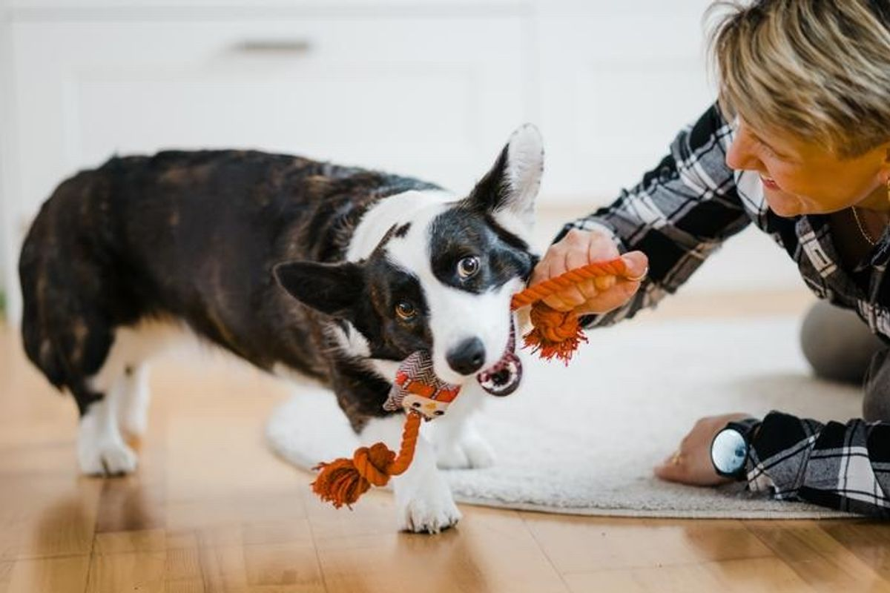
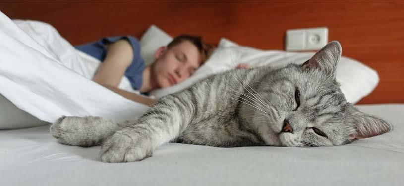
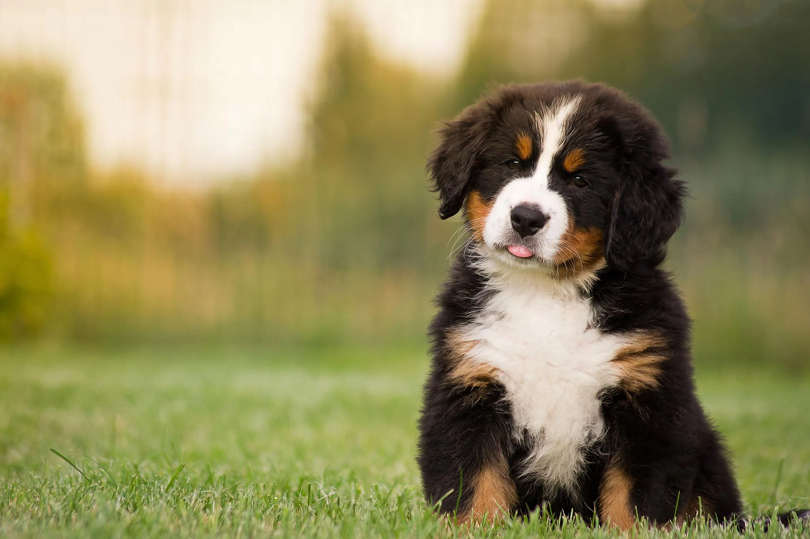
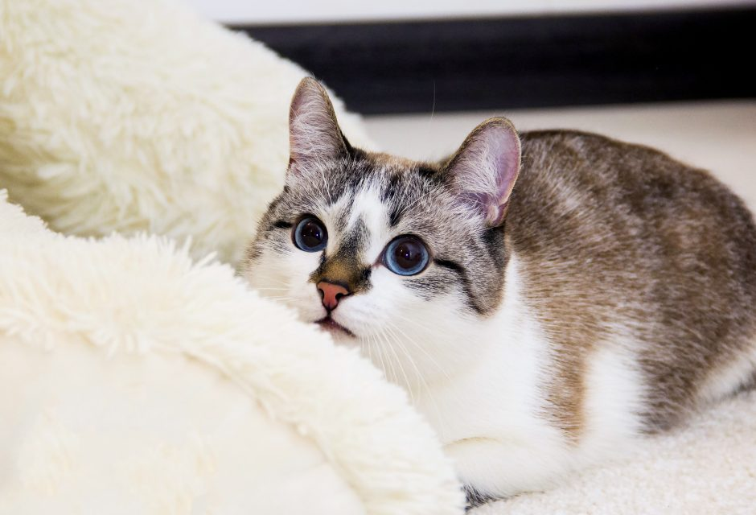
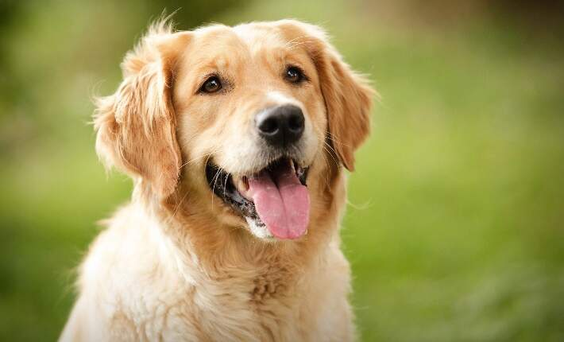

Give a loving cat or dog the care they need.
Get Started and Find a Pet!
Find friendly dogs looking for owners to have fun with.

Meet loving cats looking for a family to chill with.
Find your Paw Pal and give them a forever home

2-year-old friendly dog

1-year-old playful cat

3-year-old energetic dog
Browse our pets, meet your favorite, and submit an adoption application, we'll get back to you within 2 weeks!
Contact us to learn more about our available pets.
Contact Us